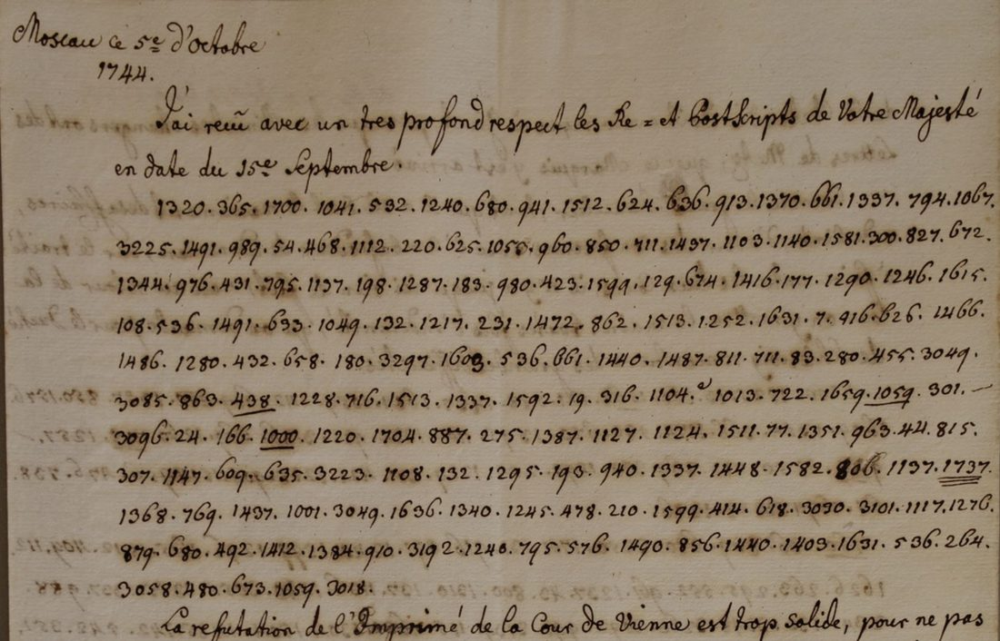

At a glanceNot solved · 0 of 176 cipher numbers
- The documents
- Six documents of 1744, five in French and one in German, one of them from Maria Theresa to Count Nicolaus Esterházy. The only one visible online is a despatch headed “Moscau ce 5e d’octobre 1744” and addressed to a sovereign (“Votre Majesté”).
- Where
- Slovenský národný archív, Bratislava, fond Esterházi – čeklíska vetva, box 636. Not on DECODE or HCPortal. One partial page is printed as Figure 6 of Antal et al., HistoCrypt 2023.
- The cipher
- Numbers separated by dots, from 7 to 1737 plus a block from 3018 to 3297: a code or large nomenclator of about 2,000 values. 157 of the 176 numbers occur only once.
- How it was tried
- The Vienna chancery keys of 1740–1746 on DECODE were opened, including the 1745 French and German circular ciphers sent to Rosenberg and Esterházy. None reaches the values 1500–1737 or 3000–3297.
- Why it resists
- 176 numbers of a 2,000-value code are too few to attack without the key, and the other five documents are not online.
- Still open
- Everything. The next steps are scans of box 636 from the Slovak National Archives and the 1744 keys for Russia and Saxony in the Vienna archives.
01 The documents
The Esterházy family archive at the Slovak National Archives (fond Esterházi, čeklíska vetva) was surveyed for ciphers by Eugen Antal, Pavol Marák, Pavol Zajac, Tünde Lengyelová and Diana Duchoňová. Their paper at HistoCrypt 2023 describes box 636 in a paragraph. It holds six encrypted documents, one fully enciphered draft and five letters, five in French and one in German, all of 1744. One letter is from Maria Theresa to Count Nicolaus Esterházy (1711–1764); the other correspondents were not identified. No plain text exists for any of them. The keys kept in the same fonds do not fit, and neither do the Vienna and Hungarian keys the authors tried.
The archive has scanned the box at 4160 × 6240 pixels. The scans were meant to go onto HCPortal but are not there yet: up to record 1881, checked on 9 October 2026, HCPortal holds nothing from this fonds. DECODE has no records from the Slovak National Archives. The only image anyone can see is the paper’s Figure 6.

The page opens in clear: “Moscau ce 5e d’octobre 1744. J’ai reçu avec un tres profond respect les Re- & Postscripts de Votre Majesté en date du 15e Septembre.” Eleven lines of figures follow. The clear text then resumes: “La refutation de l’Imprimé de la Cour de Vienne est trop solide, pour ne pas …”. The Russian court spent 1744 in Moscow, so this is an envoy’s despatch from that court to his sovereign. The Viennese “Imprimé” is presumably the court’s printed answer in the Botta affair of 1743. The writer is not named on the visible part. Count Philipp Joseph Orsini-Rosenberg, Austrian ambassador to Russia from mid-1744, writing to Maria Theresa, would fit, but another envoy writing to his king is not ruled out. It is also unexplained why the letter is among Esterházy’s papers: he was then Maria Theresa’s envoy in Dresden.
02 The cipher
The transcription has 176 groups in eleven lines, 157 of them distinct. Four groups are uncertain in the figure: 1056, 1603, 193 and 806. The values run from 7 to 1737, spread evenly across every hundred, with a separate block of twelve groups from 3018 to 3297. Six groups are below 100 (7, 19, 24, 54, 77, 83). The Vienna chancery’s 1745 instruction for its circular cipher (DECODE R1598) tells clerks to scatter two-digit nulls through the text, so these may be nulls. Only 1337 and 536 occur three times, fifteen others twice, and no pair of groups repeats. A few groups are underlined in the manuscript (438, 1000, 1059; 1737 twice). These marks are recorded in the transcription file.
This is a code or large syllabic nomenclator of about 2,000 values, of the kind the Vienna chancery issued to its envoys. It is not a small homophonic alphabet.
03 What was tried
Every dated key record of 1735–1750 from the Haus-, Hof- und Staatsarchiv on DECODE was listed, and those of 1740–1746 were opened:
- R1594, Teutscher Circular Ziffer von anno 1745 zum aufschlüssen, issued to Rosenberg, Wasner, Esterhasi, Colloredo and seven other envoys: German, values 100–1500.
- R1597, Französischer Circularziffer von anno 1745 zum Setzen, same list of envoys: the French encipher table, values 101–1355. R1596 is its decipher table (101 W, 102 wa, 103 Wasner …).
- R1595, a French and German circular decipher table of the 1740s: values 101–1499.
- R1598, Pro Informatione: the instruction for using the circular cipher, with a worked example.
- R1593 (1746) and R1601: multi-table keys; R1562 (1743): German, values under 1000; R1574 (1740): German; R1644 (1740) and R1691 (1741): small keys.
None covers both 1500–1737 and 3000–3297. The 1745 circulars are closest in style, and both Rosenberg and Esterházy received them, but the Moscow letter is from 1744 and its numbers run beyond theirs. They were ruled out on value range; no key was applied group by group.
No reading of box 636 was found in print or online. The search turned up a sibling: a letter in cipher from Maria Theresa to Esterházy, Vienna, 31 July 1744, sold by the Dorotheum on 17 December 2024. The auction house describes a three-digit word code and says a copy of its key survives in the Austrian State Archives. That letter is not in box 636. A three-digit code, as described, would not produce the four-digit groups of the Moscow page.
No ciphertext-only attack was run. 176 groups of a 2,000-value code, almost all seen once, give a solver nothing to fit.
04 What would finish it
- Scans of all six documents in box 636 from the Slovenský národný archív (Drotárska cesta 42, Bratislava). The archive already holds them.
- Box 635 of the same fonds: drafts of 1741 and 1744 with short enciphered passages written under their clear text. If any use the 1744 key, they are cribs.
- In the Haus-, Hof- und Staatsarchiv: the 1744 Staatskanzlei keys for Russia and for Saxony, and the key that Dorotheum says belongs with the Maria Theresa–Esterházy letters. None of these is on DECODE.
05 Sources
- E. Antal, P. Marák, P. Zajac, T. Lengyelová, D. Duchoñová, “Encrypted Documents and Cipher Keys From the 18th and 19th Century in the Archives of Aristocratic Families in Slovakia”, HistoCrypt 2023, doi:10.3384/ecp195689, section 2.1 and Figure 6.
- DECODE key records R1562, R1574, R1593–R1598, R1601, R1644, R1691 (ÖStA HHStA, Staatskanzlei Interiora, Chiffrenschlüssel, Kt. 14–16).
- Dorotheum, “The Empress’s Code” (blog, December 2024), on the Maria Theresa letter of 31 July 1744.
Transcription, notes and profile: targets/esterhazy1744/.